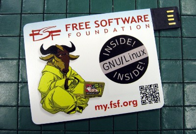

Since 1985 we've been fighting for essential freedoms for computer users
| Thank You for being an associate
member of the Free Software Foundation! It is largely thanks to our associate member program that we are able to continue fighting for the essential freedoms for computer users. You really do make a difference. This FSF Bootable Member Card is based on Trisquel GNU/Linux.
More information on it is available at http://www.fsf.org/membercard. Advocacy Videos
Essays |
 |
Your support is greatly appreciated and recognized.